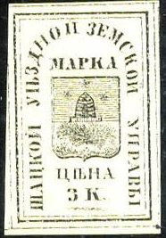
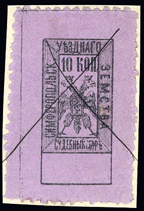

Return To Catalogue - Go to Zemstvos overview - Russia
Note: on my website many of the
pictures can not be seen! They are of course present in the
catalogue;
contact me if you want to purchase it.


3 k black (2 types, with and without wavy line under '3k') 5 k black
3 k black (many types)
Two different types, both in tete-beche.


3 k black on lilac 3 k black on grey (smaller size) 3 k black on lilac (text curved in upper part, 2 types, 1889) 3 k black on green (1895) 3 k black on grey (more text, 1910) 3 k black on lilac (more text)
3 k red 3 k black on red 3 k black on lilac Exists with '1889' instead of value:

With '18 89' in the upper corners
(Sorry, no picture available yet)
3 k black on red
3 k red, yellow, blue, green and black

5 k black on green
I've been told that the following stamp is a fiscal stamp (carriage riding stamp?):
10 different values seem to exist from 1 k to 10 R (I have seen the 10 R as a red manuscript surcharge on a 1 R black, green and blue)


No postage stamps were issued for this town, however, some fiscal stamps exist. They have a double headed eagle in a square. The value is 10 k black on lilac (3 slightly different types) and they were issued in 1879.
3 k blue (imperforated) 3 k blue (perforated, 1878) 3 k green (slightly different design)
(3 k green, different types)

3 k green (perforated or imperforated, more types) 5 k brown (more types) 5 k red

5 k black and blue 5 k black and red
Some stamps are supposed to have been issued in 1917, I have never seen them.
2 k black on red
2 k lilac 2 k violet
1 k blue on blue (1891) 2 k red on blue
A slightly different type of the 1 k value
4 k red 4 k green (1893)
(Reduced size)
2 k orange 2 k blue 4 k brown
(reduced sizes)
2 k blue (perforated or imperforated) 4 k violet (perforated or imperforated) 4 k black on red (perforated or imperforated) 5 k lilac (perforated or imperforated)

10 k green 25 k orange and green 50 k red and blue

3 k black, yellow, red and blue 3 k red, lilac, yellow and green (1880) 3 k red, lilac, yellow and blue (1883) 3 k red, grey, green and blue (1883)
3 k black, brown, red and blue 3 k brown, yellow, red and blue (1892) 3 k blue and brown (1898)


3 k black (various types)
3 k black (various types)


{kind=link}
{kind=link}
{kind=link}
{kind=link}